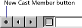

Using Director > Cast members and Cast windows > Creating cast members
Using Director > Cast members and Cast windows > Creating cast members |
Creating cast members
You can create several types of cast members in Director, which includes editors to create common media such as text, shapes, and bitmaps. You can also use Director for basic editing of media imported from other applications. You define external editors to launch from within Director when you double-click a cast member, and edit almost any type of supported media. See Launching external editors.
You can also import cast members. See Importing cast members.
To create a new cast member from the Insert menu:
1 |
Open the Cast window for the cast member you are creating. |
To place a cast member in a specific position, select the position in Thumbnail view. See Using Cast Thumbnail view. Otherwise, Director places the new cast member in the first empty position or after the current selection in the Cast window. |
|
2 |
Choose Insert > Media Element and then choose the type of cast member to create. |
For more information on each choice, see the following sections: |
|
3 |
To create a control or button, choose from the following options: |
Choose Insert > Control > Field to create a field cast member. Creating a field cast member also creates a sprite on the Stage. See Working with fields. |
|
Choose Insert > Control > Push Button, Radio Button, or Check Box to create a button cast member and a sprite on the Stage. See Using shapes. |
|
(Windows only) Choose Insert > Control > ActiveX to create an ActiveX cast member. See Using ActiveX controls. |
|
To create a cast member in a media editing window:
1 |
Open a media editing window by choosing Window and then choosing the type of cast member you want to create (Paint, Text, Script, and so on). |
2 |
Click the New Cast Member button to create a cast member of the corresponding type. The cast member is added to the most recently active Cast window.
 |